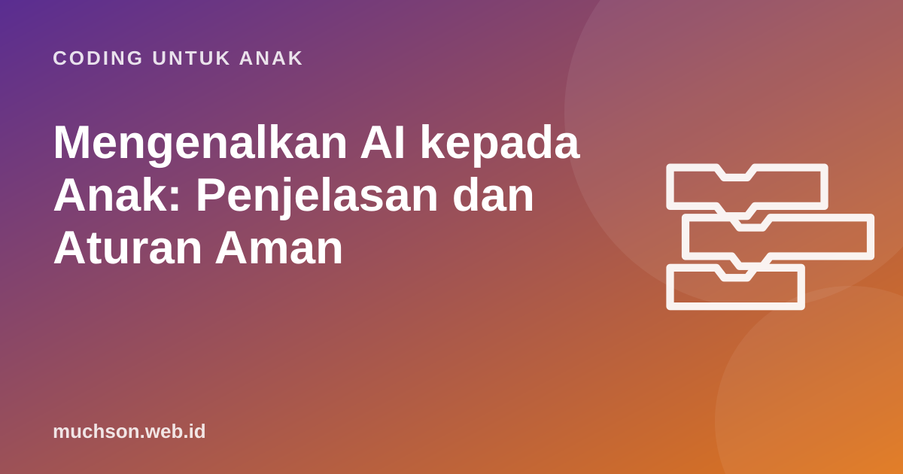

Beranda › Artikel › Coding untuk Anak
Coding untuk AnakMengenalkan AI kepada Anak: Penjelasan dan Aturan Aman
Anak-anak kini tumbuh bersama asisten suara, rekomendasi video, filter wajah, dan chatbot. Mereka akan memakai AI, dengan atau tanpa penjelasan dari kita. Lebih baik mereka memahaminya sejak awal: apa itu AI, apa yang bisa dan tidak bisa dilakukannya, dan bagaimana memakainya dengan aman.

Penjelasan AI untuk anak
"AI adalah program komputer yang belajar dari banyak sekali contoh. Kalau diberi ribuan foto kucing, ia belajar mengenali kucing. Tapi AI tidak benar-benar mengerti seperti kita, dan kadang bisa salah dengan sangat percaya diri."
Bandingkan dengan program biasa yang dibuat anak di Scratch. Di Scratch, manusia menulis aturannya: "jika menyentuh bintang, tambah skor". Pada AI modern, mesin menemukan polanya sendiri dari contoh. Perbedaan ini bisa diperlihatkan dengan aktivitas sederhana di bawah.
Aktivitas: menjadi mesin yang belajar
Permainan ini meniru cara AI belajar, tanpa komputer:
- Siapkan 10 gambar buah dan sayur. Jangan beri tahu aturannya.
- Tunjukkan satu per satu dan sebutkan labelnya: "ini buah", "ini sayur".
- Setelah 10 contoh, tunjukkan gambar baru dan minta anak menebak.
- Diskusikan: "Bagaimana kamu menebaknya? Pola apa yang kamu pakai?"
- Tunjukkan contoh sulit, misalnya tomat. Kalau anak salah, bahas bahwa AI juga bisa salah bila contohnya membingungkan.
Untuk versi digital, alat gratis seperti Teachable Machine dari Google memungkinkan anak "mengajari" komputer mengenali gerakan tangan atau benda lewat kamera dalam beberapa menit. Ada juga Machine Learning for Kids yang menghubungkan model buatan anak dengan Scratch. Dampingi anak saat memakainya.
AI di sekitar anak
| Contoh | AI melakukan apa | Pertanyaan untuk anak |
|---|---|---|
| Rekomendasi video | Menebak video yang membuat kita terus menonton | "Kenapa aplikasinya ingin kita menonton lebih lama?" |
| Asisten suara | Mengubah suara menjadi teks, lalu menjawab | "Apa yang ia dengar saat kita tidak memanggilnya?" |
| Filter wajah | Mendeteksi posisi mata, hidung, mulut | "Apakah foto yang diedit selalu menunjukkan kenyataan?" |
| Chatbot | Menyusun jawaban kata demi kata dari pola bahasa | "Bagaimana kita tahu jawabannya benar?" |
Aturan keluarga memakai chatbot AI
Banyak layanan chatbot umum mensyaratkan usia minimal tertentu, sering 13 tahun, dan izin orang tua untuk remaja. Periksa ketentuan setiap layanan sebelum anak memakainya. Untuk anak SD, pemakaian sebaiknya bersama orang tua. UNICEF dalam panduannya tentang AI untuk anak menekankan perlindungan data, keamanan, dan hak anak untuk memahami teknologi yang memengaruhi mereka.
Tiga hal yang perlu dipahami anak
Fondasi sebelum AI: memahami cara komputer bekerja
Anak yang pernah membuat program sendiri lebih mudah memahami AI: ia tahu bahwa komputer menjalankan perintah, bahwa program bisa salah, dan bahwa hasil bergantung pada masukan. Karena itu, coding dasar adalah bekal yang baik sebelum belajar AI. Di PixelKode, anak membuat "Chatbot Robo" berbasis aturan, lalu bisa membandingkannya dengan chatbot AI: yang satu mengikuti aturan buatannya, yang lain menebak dari pola.
Tanya jawab
Umur berapa anak boleh memakai ChatGPT atau chatbot lain?
Bagaimana menjelaskan AI kepada anak SD?
Apakah AI berbahaya untuk anak?
Aktivitas AI apa yang aman untuk anak?
Sumber dan bacaan lanjut
- UNICEF Innocenti: Guidance on AI and children
- Teachable Machine (Google)
- Machine Learning for Kids
- Day of AI (MIT RAISE): kurikulum AI untuk sekolah